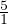
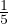
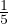

Arvu ja tema pöördarvu korrutis on võrdne ühega.
Naturaalarvu pöördarvu leidmiseks kirjutame selle hariliku murruna ja siis vahetame lugeja ja nimetaja. Hariliku murru pöördarvu leidmiseks vahetame antud hariliku murru lugeja ja nimetaja. Näiteks arvu 5 korral 5 =  ja siis vahetame lugeja ja nimetaja ja saame
 . Korrutades näeme, et arvu ja pöördarvu korrutis võrdub ühega
. Korrutades näeme, et arvu ja pöördarvu korrutis võrdub ühega
 ⋅ =
⋅ =  = 1.
= 1.